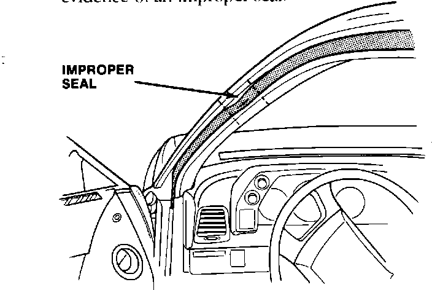
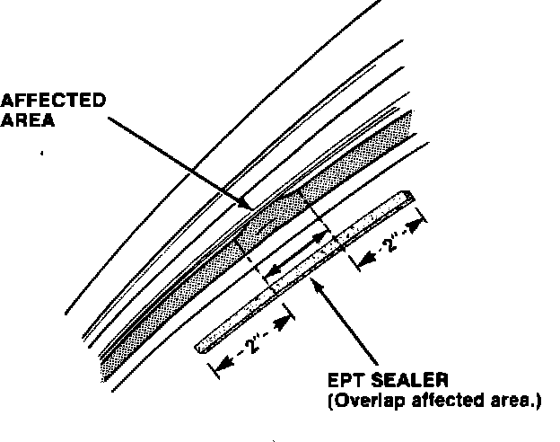
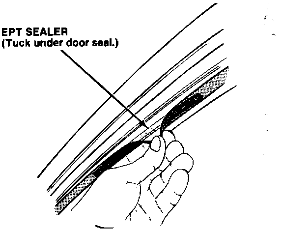

Door Window - Wind Noise
87acura01December 21, 1987
YEAR MODEL APPLICATION
1988 LEGEND ALL
COUPE
87-039
Door Window Wind Noise
PROBLEM
Wind noise from the driver's or passenger's window is heard when driving the car at highway speeds.

CORRECTIVE ACTION
Install a strip of 5 mm EPT sealer under the door seal.
1. Inspect the door seal of the affected window for evidence of an improper seal.

2. Measure the length of the affected area of door seal, and cut a piece of 5 mm EPT sealer about 1/4 inch wide and about four inches longer than the affected length.

3. Insert the EPT sealer under the affected door seal, tucking the sealer completely under the seal.
4. Road test.
PARTS INFORMATION
EPT 5 mm Sealer: P/N 06991-SA5-000
WARRANTY CLAIM INFORMATION
Operation number: 835006 (left side 836006 (right side)
Flat rate time: 0.4 hour per side
Failed part P/N: 72391-SGO-003 (left side)
72381-SGO-003 (right side)
Defect code: 060
Contention code: B07